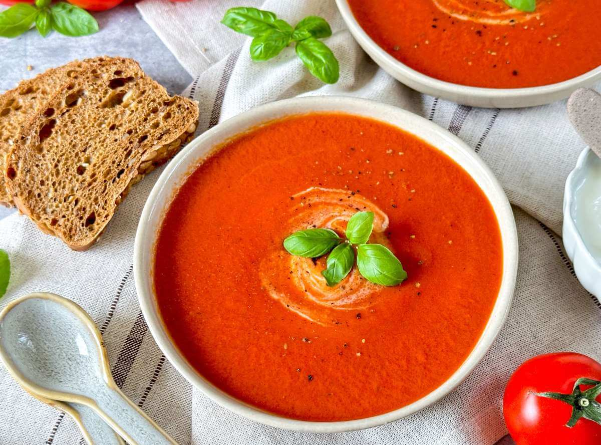

Zutaten:
- 1 kg
- 1
- 1
- 600 ml
- 100 ml
- 30 ml
- Tomaten
- Zwiebel
- Knoblauchzehe
- Gemüsebrühe
- Sahne
- Olivenöl
- Salz
- Pfeffer
- Basilikum
Zubereitung:
- 1 Zwiebel und 1 Knoblauchzehe schälen und schneiden.
- 30ml Olivenöl in einem Topf erhitzen und die Zwiebel und den Knoblauch darin glasig dünsten.
- 1 kg Tomaten waschen, vierteln und hinzufügen.
- 600ml Gemüsebrühe angießen und alles ca. 10 Minuten köcheln lassen.
- Die Suppe pürieren, durch ein feines Sieb geben und 100ml Sahne hinzufügen.
- Mit Salz, Pfeffer und Basilikum abschmecken.